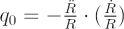
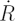
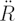
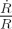

The deceleration parameter, q0, indicates the rate at which the expansion of Universe is slowing due to self-gravitation. It is defined by:

where R is the scale factor, R(t), of the Universe by which all lengths scale,

is the first time derivative (rate of change) of R, and
is the second time derivative of R. In this notation
is equivalent to the Hubble parameter, H, and its present value is H0, the Hubble constant.Recent observations have suggested that the rate of expansion of the Universe is currently accelerating, perhaps due to the effects of dark energy. This yields negative values for the deceleration parameter.